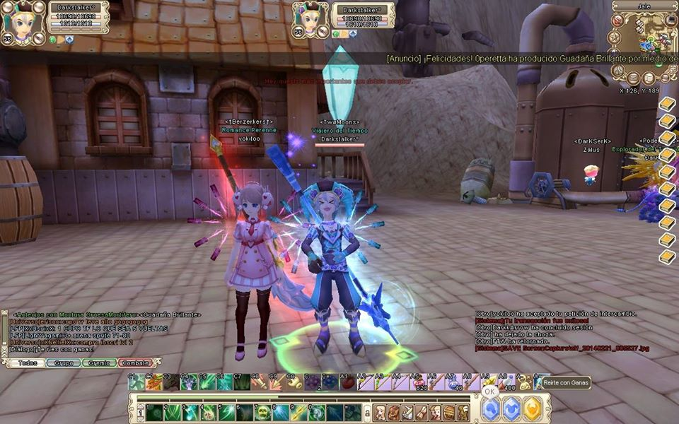
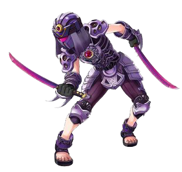
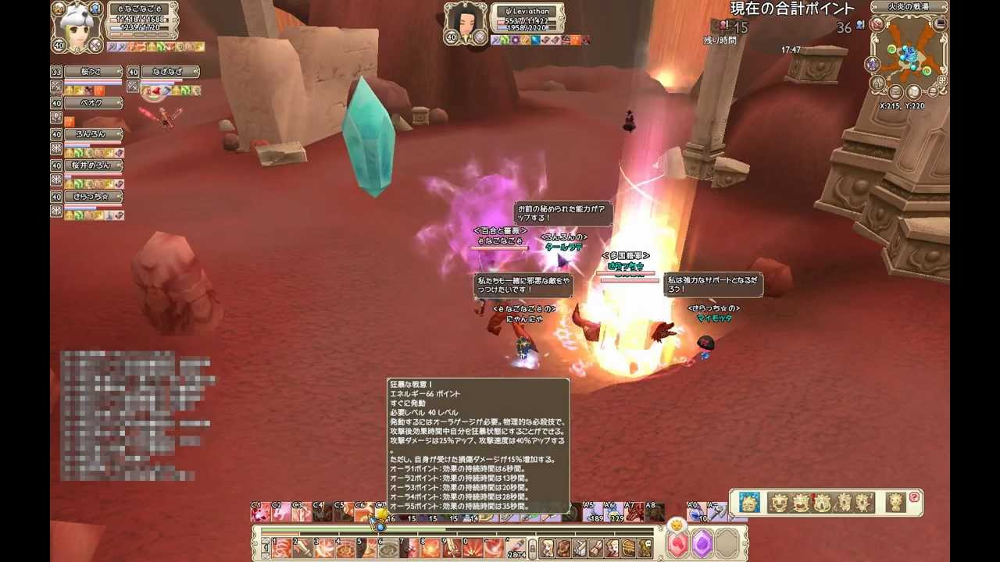
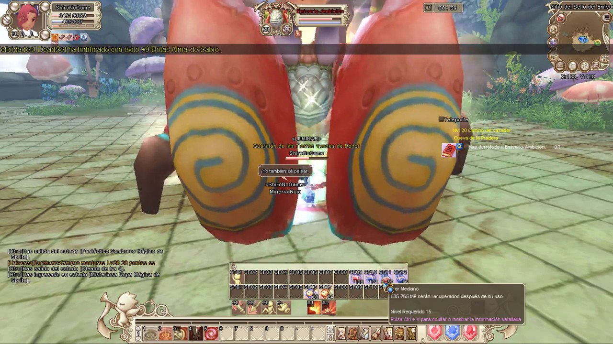

Hola soy Darkstalkers
Estoy recordando mis tiempos
en los cuales era un Asesino...

LES CUENTO ALGO SOBRE ESTE MARAVILLOSO JUEGO...
Clase: Asesino (mi clase)
Ventajas
Alto daño en corto tiempo
Mas evasion que otras clases
Mas critico que otras clases
Pueden usar 2 espadas de 1 mano y armas de rango como arcos y pistolas
Desventajas
Ademas de las pociones de HP y armas con efectos de drenaje, los assassins no tienen metodos de curarse ellos mismos
Cantidad de HP baja
Defensa baja

Los Gremios
Lo bello de compartir
Un gremio es un grupo de personas que luchan por el mismo objetivo. Sobre todo una forma de interacción social. Puedes confiar en tus compañeros de gremio para ayudarte a derrotar a los más poderosos jefes, responder a sus preguntas, o simplemente compartir.
Para crear un gremio, el jugador debe ser nivel 16, no ser parte de otro gremio, y pagar 3 de oro para crearlo. Una vez formado, el líder del gremio puede invitar a otros jugadores a unirse.
Cuanto mayor sea el nivel de gremio, más gente puede ser reclutada. Por ejemplo, un gremio de nivel 3 puede contener hasta 100 miembros. Para subir de nivel un gremio los jugadores deben completar misiones y ganar más prestigio. Los gremios de nivel superior también pueden configurar más rangos de hasta 5 diferentes en el nivel 4.
Campos de Batalla (PvP)
¿Que son los Campos de Batalla (PvP)?
El pvp, es un sistema de enfrentamiento entre jugadores. En los Campos de batalla, los jugadores pueden luchar unos contra otros, ya sea en equipos o 1 vs 1.
Arena Fuego(imagen), esta se encontraba en un mapa ubicado en una zona volcánica en la cual se luchaba por mantener del color de tu equipo el cristal móvil que se movía por el centro del mapa.
Arena Sprite, en esta arena habia 5 cristales colocados alrrededor del mapa los cuales habia que atacar para mantenerlos del color de tú equipo y asi sumar puntos hasta llegar a los 250 puntos y ganar la batalla.

LOS DUNGEONS QUE MÁS AMÉ

LA CUEVA DE LA PRADERA
La cueva de la pradera es el primer dungeon que realizamos en el juego. Comenzamos a recibir misiones que nos guiaran hasta el final del Dungeon, pero ojo. Tendremos que ser fuertes para ser capaces de destruir a los jefes del dungeon, ¡no será nada fácil! Muchos monstruos los protegen, e intentarán por todos los medios que no lleguéis hasta él, ¡lucharán y dejarán su vida por ello!
La Mina condenada es el segundo dungeon que realizamos en el juego. Comenzamos a recibir misiones que nos guiaran hasta el final del Dungeon, pero ojo. Tendremos que ser fuertes para ser capaces de destruir a los jefes del dungeon, ¡no será nada fácil! Muchos monstruos los protegen, e intentarán por todos los medios que no lleguéis hasta él, ¡lucharán y dejarán su vida por ello!
La ciudad antigua de la vid, es un dungeon donde se puede entrar a partir de que se llega al nivel 60, este dungeon era uno de los primeros los cuales comenzaban a dar un oro considerable por realizarlo.
Por lo cual había personas que vendian su servicio de realizar las repeticiones(matar a los jefes) de los dungeons para poder cobrar la mision repetitiva de hasta 5 veces por día y cobrar la recompensa de oro por cada vez que se mataban a todos los jefes del dungeon.
La Torre Fénix era un dungeo que se podía comenzar a realizar la repetición a partir del lv 68, pero para poder entrar a la camara del jefe final había que realizar las misiones que se desbloqueaban hasta el lv 70. Este dungeon era un gran reto para los valientes que se animaban a armarse para pelear en arenas pvp de lv 70 y también ser lo suficientemente fuertes y dedicados para poder ganarle a los jefes de Torre Fénix... sin morir en el intento.
Te maldigo reflejo del alacran!!!
La Torre Fénix era un dungeo que se podía comenzar a realizar la repetición a partir del lv 68, pero para poder entrar a la camara del jefe final había que realizar las misiones que se desbloqueaban hasta el lv 70. Este dungeon era un gran reto para los valientes que se animaban a armarse para pelear en arenas pvp de lv 70 y también ser lo suficientemente fuertes y dedicados para poder ganarle a los jefes de Torre Fénix... sin morir en el intento.
Te maldigo reflejo del alacran!!!
La Torre Fénix era un dungeo que se podía comenzar a realizar la repetición a partir del lv 68, pero para poder entrar a la camara del jefe final había que realizar las misiones que se desbloqueaban hasta el lv 70. Este dungeon era un gran reto para los valientes que se animaban a armarse para pelear en arenas pvp de lv 70 y también ser lo suficientemente fuertes y dedicados para poder ganarle a los jefes de Torre Fénix... sin morir en el intento.
Te maldigo reflejo del alacran!!!